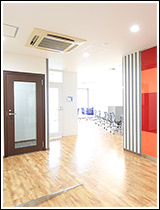
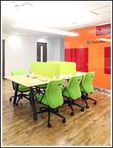
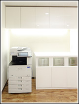
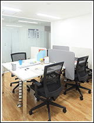
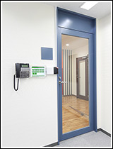
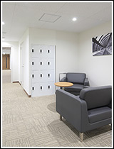
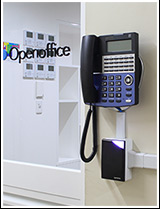

なぜ「無人運営」なのか？｜個室のレンタルオフィスならOpenoffice：東京・大阪をはじめ全国に50拠点以上
- 【個室レンタルオフィス】オープンオフィス HOME
- オープンオフィスとは？
- オープンオフィスの『無人運営』とは？
オープンオフィスとは？
- ■成功する起業家の条件：創業資金の有効活用
- ■起業時の【軍資金】がいかに大切か
- ■オープンオフィスの『保証金制度』
- ■オープンオフィスの『無人運営』とは？
- ■一坪オフィス実験
- ■立地・デザインについて
- ■共益費って？
- ■何も買う必要がない！
- ■オープンオフィスで過ごす「あなたの一日」
オープンオフィスの『無人運営』とは？
オープンオフィスは、全拠点を受付や常駐管理者のいない形で運営しています。
なぜ？
大きく二つ理由があります。
（１）お客様の独立性を保つため
（２）低価格を実現するため
です。
受付サービスは、とても便利な反面、入居されるお客様の中には、どうしても「間借りしている」ような気分になってしまうという声も聴きます。
オープンオフィスは独立や起業された皆さんに、もっと「自由に」、自分のオフィスのように＜オープンオフィス＞を使って頂くことを考慮し 受付のサービスやシステムを見直しました。
受付を廃止することで、24時間、自分の好きな時に誰に遠慮する事も無く、間借りしているような感じも無く、本当に「自由に」お使い頂けるようになりました。
そういう「独立性」という意味では、通常のオフィスやマンションと変わりありません。
さらに「低価格」で皆さんにご利用頂けるようになりました。
常勤する受付を廃止し、必要なサービスは本部で管理するようにしました。
受付の廃止に伴って、受付の代わりをしてくれる、無人管理システムを開発しました。
これによってお客様のお客様が来られても困ることの無いようにしています。
しかしながら、オフィスを快適に保つには、どうしても「人の力」が必要です。
例えば、「清掃」です。
こういった繊細な人の手でしか出来ないことを専門チームがやっています。
だから、ちょっとでも不快なところを感じましたら、すぐにご連絡ください。
すぐに対応します。
簡単ではありますが、なぜ私達が無人で運営しているか、分かって頂けたでしょうか？
こういった理由もあり「お部屋を見たい」という方には、完全予約制でご案内をしています。
さて、本当に省スペースのオフィスで仕事が出来るのでしょうか？
実際に実験してみました。






